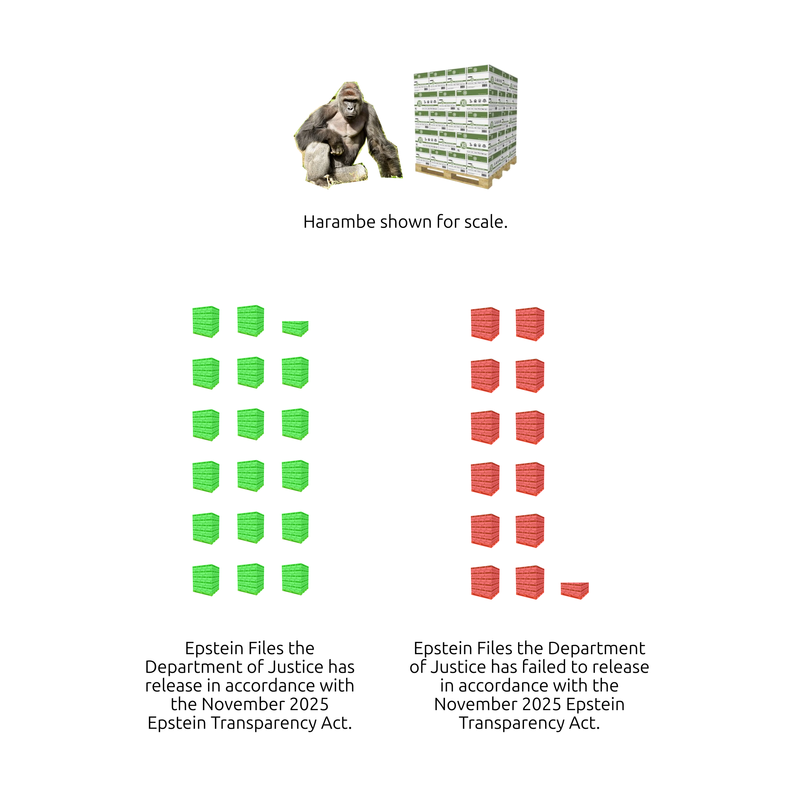
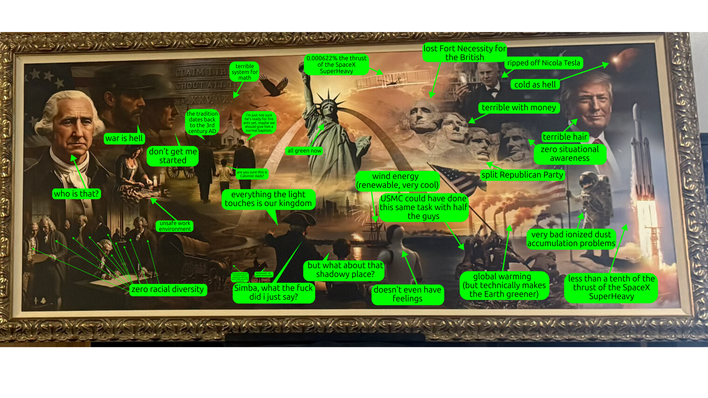
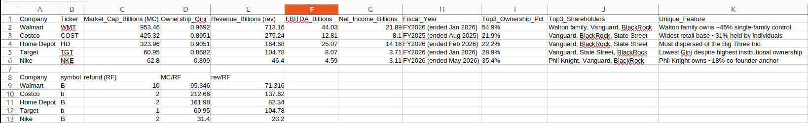
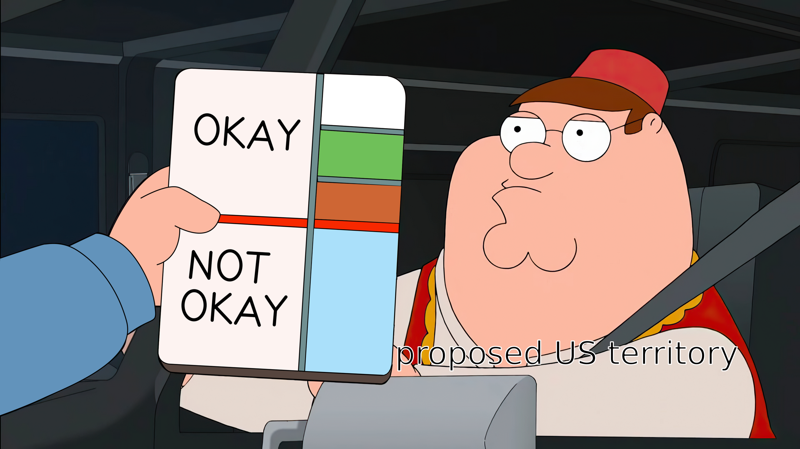

hey Jenna how's it going. looks like the Democrats took control of both houses in Congress, that's good. AZ's 5th Congressional district is close, but i really hope Mark Lamb takes it. Lee seems like a witchy person; the fact that it took an entire soda can's worth of camping fuel to burn her card (and the fact that i heard old timey fire-and-brimstone preaching while i did it) was pretty disturbing. plus i genuinely think Mark Lamb has the type of integrity Americans need in Congress. i got locked out of TruthSocial so i'm writing to you here now. the Democrats wont take control of Congress until next year, but hopefully the results of this election is the referendum the Republicans needed to work together with the Democrats to solve our common Orange Witch problem & i can see you soon.